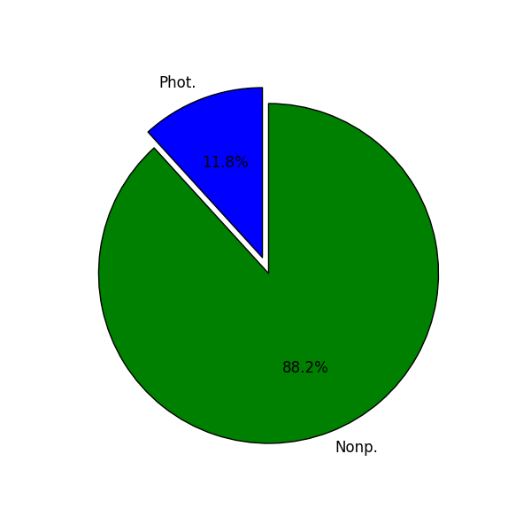
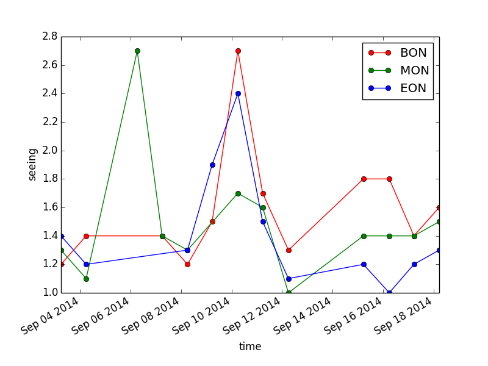
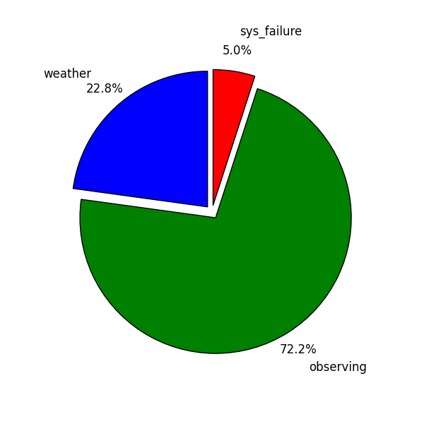
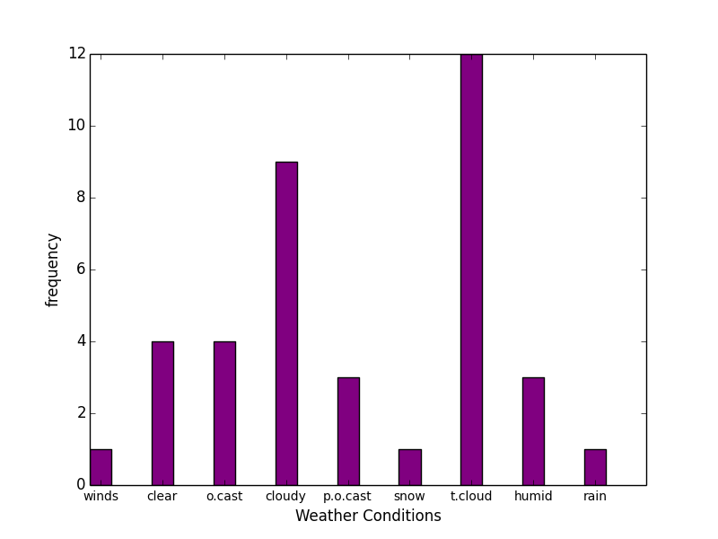
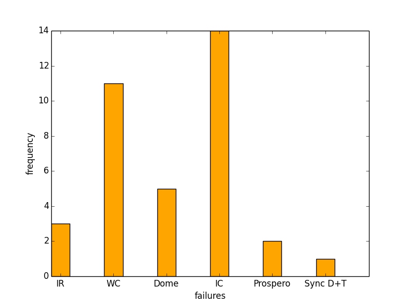
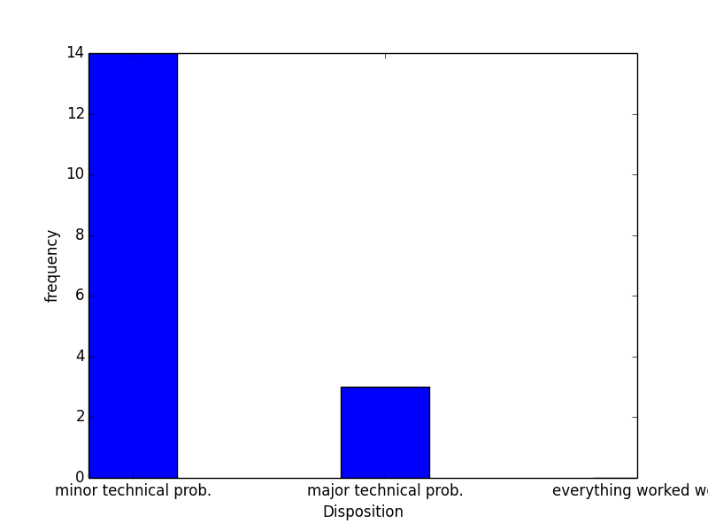

SMARTS 1.3-m Night Report Summary 140901
created on 2014-09-18 10:42:21.035272
Total Nights :17
Observing Conditions

Program Used
Total
Photometric
2
Nonphotometric
15
Seeing Conditions

BON Statistic
Seeing Value
max
2.7
mean
1.6
min
1.2
MON Statistic
Seeing Value
max
2.7
mean
1.5
min
1.0
EON Statistic
Seeing Value
max
2.4
mean
1.4
min
1.0
Time Loss & Observing

task
hours
engineering
0.0
weather
43.5
observing
137.5
ToO
0
sys_failure
9.5
Weather Conditions

conditions
hours
strong winds
1
clear
4
overcast
4
cloudy
9
partial overcast
3
snow
1
thin clouds
12
high humidity
3
rain
1
ice
1
System Failures

failure
freq.
IR computer failed
3
WC computer failed
11
Dome Failure (shutter/motor/tracking)
5
IC computer failed
14
Failure with Prospero
2
Synchronization problems between the dome and the telescope
1
Night Disposition

Disposition
freq.
minor technical problems
14
major technical problems
3